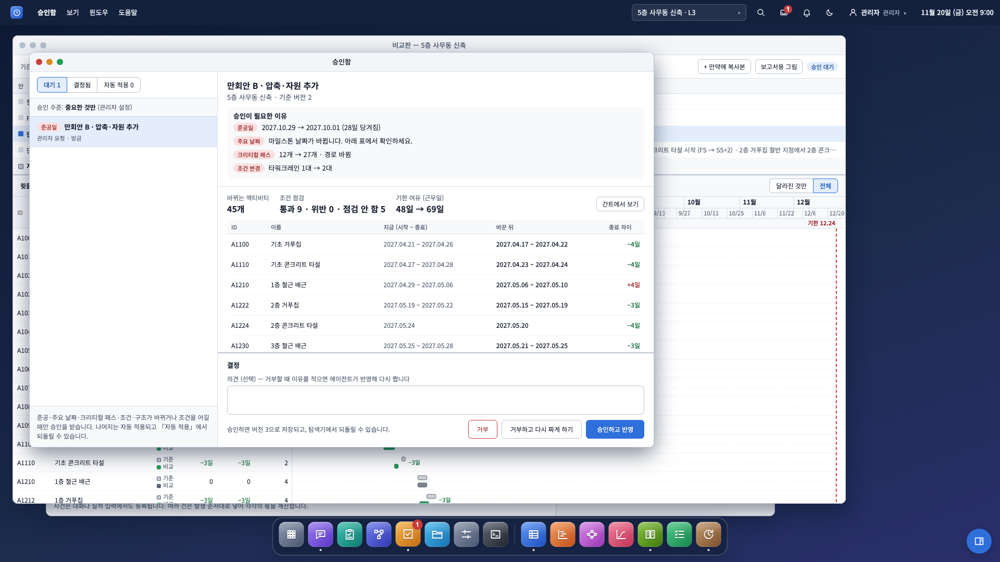
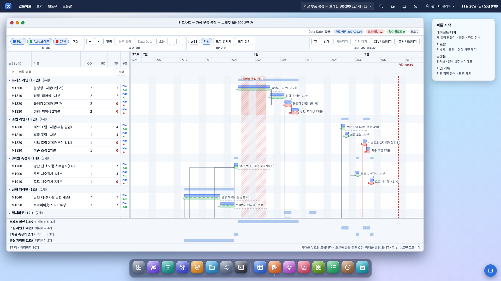

하루에도 수십 번 변하는 스케줄 — 밤샘 재작업과 공종별 검토 지옥을 끝내는 에이전트 OS
"비 오고, 자재 늦고, 장비 겹치고… 수십 가지 상황을 검토해 밤새 공정표를 고쳤더니 다음 날 아침 또 변경되었다.
공종별 전문가 검토까지 돌려야 하는 이 고통, 언제까지 반복해야 할까?"
15개 프로그램PC OS + 스마트폰 현장 앱
Liner API 5종Router·Search·MCP·시각화·임베딩
3,260+ 테스트서버 2,097 · 화면 1,164 · E2E 4종
주당 6~8시간↓1인 기준 · 100% 신규 개발
1. 문제 정의 — 공정표는 만들 때보다 고칠 때 시간이 든다 심사 30%
Pain 01
수십 가지 상황 동시 검토
날씨·법규·타워크레인 대수·선후행(FS/SS/FF/SF)·여유(Float)·크리티컬 패스·납기를 동시에 맞춰야 합니다.
Pain 02
밤새 고쳤더니 내일 또 변경
반나절~밤샘으로 만회 계획을 세워도 다음 날 현장에서 또 변수가 터져 처음부터 다시 계산합니다.
Pain 03
공종별 전문가 검토·협의 지옥
골조·토목·전기·설비 담당자에게 시방서·도면·일정을 돌려 검토받고 승인받는 데만 며칠이 걸립니다.
누가, 얼마나 불편한가 (현장 3대 역할)
역할
현장에서 하는 일
실제 병목과 소요 시간
공정 담당
주간 진도 갱신, 지연 시 만회 계획 수립
진도 5% 밀리면 만회 계획에 반나절~밤샘 · 협력사 공정표 검토 2~3시간
PM
지연 원인 파악, 발주처 보고, 변경 승인
마일스톤 단축 요구 대응 하루 · 공종별 근거/계약 조건 확인 수 시간
현장소장
3주 룩어헤드 확인, 자재·장비 투입, 현장 보고
회의록·현장 사진 변경사항 반영 매주 2시간+ · 사무실 공정표와 단절
AI · 코드 엔진 · 사람 역할 분담 & 하지 않는 것
단계
Liner AI
코드·하네스
사람
요청 해석 · 조건 추출 · 질문지
✅
—
답변/가정
날짜 · 여유(Float) · CPM · 자원 계산
—
✅ (0% 환각)
—
4겹 하네스 조건 점검
—
✅
조건 조정
위반 고침 · 만회안 설명/추천
✅
✅ 탐색
비교 선택
시방서·사진 분류 · 법규/날씨 근거
✅
✅ Qdrant
출처 확인
준공·크리티컬·조건 변경 확정
—
—
✅ 승인함
ChronOS가 하지 않는 것 (신뢰의 경계)
AI 날짜 계산 금지: LLM이 보낸 날짜는 코드가 버리고 CPM 엔진이 직접 계산합니다.
거짓 통과 금지: 코드로 못 재는 조건은 「자동 점검 안 됨」으로만 표시합니다.
무단 반영 금지: 중요 변경은 승인함을 거치며, 거부 시 사유를 반영해 재작성합니다.
근거 창작 금지: 법규·기상 근거가 없으면 지어내지 않고 미확인으로 알립니다.
2. 솔루션 및 완성도 — 세 가지 고통을 끝내는 실제 동작 화면 심사 30%
ChronOS는 에이전트 하나가 ReAct 루프로 동적 워크플로우를 실행하고, 사람은 필요한 창만 열어 확인·승인하는 에이전트 OS입니다. 사무실 PC에서는 다중 창 멀티태스킹, 현장에서는 스마트폰 전용 앱(`MobileShell`, ≤768px 자동 전환)으로 동작합니다.
[고통 ① 해결] 조건·규칙에서 타워크레인 1→2대 변경 시 간트에 점선으로 즉시 미리 보기(준공 10.29 → 09.24)[고통 ② 해결] "골조 3일 지연" 한 줄 → 만회안 A/B 자동 생성 → 같은 차트·다중 안 요약표에서 즉시 비교

[고통 ③ 해결] 중요 변경(준공·크리티컬·조건)은 사유·영향 요약과 함께 승인함으로 → 공종/PM 검토 후 1클릭 승인[투명한 에이전트] 개발 콘솔에서 ReAct 루프·컨텍스트 8종 비중·하네스 점검/고침 회차·승인 분기를 SVG로 실시간 추적
만든 것 / 설계만 된 것 구분표 (2026-11-21 기준 · 계획 1·2·3 전체 구현 완료)
영역
실제 구현·동작 완료 (커밋 및 자동 테스트 검증)
설계만 됨 (향후 과제)
OS 셸 & 모바일
15개 프로그램 OS 셸(Dock·메뉴바·빠른 시작·모니터 자동 조정·밝은/어두운 테마) + 스마트폰 전용 `MobileShell`(하단 5탭바·현장 사진 첨부·이동 중 승인)
—
에이전트 & 추적
ReAct 루프(12단계)·동적 워크플로우 기록·컨텍스트 8종(날짜 도우미·붙인 파일 포함)·대화 카드 13종·개발 콘솔(전체 구조 + 이번 턴 실행 흐름도 SVG)
워크플로우 스킬 저장·재실행
일정 생성·가져오기
동적 질문지·조건 추출·WBS→초안→코드 계산→하네스 점검→고침(최대 5회)·L1~L5·엑셀/CSV 공정표 자동 감지 및 가져오기
P6 XER · MS Project(.mpp) 직접 변환
엔진 & 하네스
주 5/6/7일 달력(공휴일·금지기간)·CPM(FS/SS/FF/SF)·자원 맞춤·4겹 하네스·지연 영향·단축안 탐색·공정률/S-커브/3주 룩어헤드
—
자료함 & 근거
대화 첨부(10개/50MB·그림 1568px 축소)·5축 자동 분류·Qdrant 뜻+낱말 검색·자료함(미리 보기·폭 조절·합치기)·대화별 모델 ▾·기상청 API·Liner Search/MCP/시각화
스캔 PDF OCR, 팀/사용자별 열람 권한 분리
3. Liner API 활용 — 5종 API를 핵심 파이프라인에 풀스택 내재화 심사 20%
ChronOS는 Liner API를 단순 챗봇 래핑이 아니라, 판단(Router) · 조사(Search/MCP) · 눈(Vision) · 기억(Embeddings) · 보고(Visualization) 다섯 축의 핵심 엔진으로 통합했습니다. 특히 liner-mark(105만 토큰)와 작업별 라우팅 전략으로 비용을 30~50% 절감하면서 판단이 필요한 곳에만 고성능 모델을 씁니다.
쓰임새 (배정)
기본 모델 / 전략
활용 및 안전장치
light 추출·분류
liner-claude-router · cost
요청 조건 추출, 5축 자료 자동 분류·요약 (저비용·고속)
normal 대화·ReAct
liner-claude-router · balanced
도구 호출 루프, 대화창 모델 ▾으로 대화별 실시간 모델 교체 가능
hard 생성·만회
liner-claude-router · quality
WBS·공정 초안·하네스 위반 고침(최대 5회)·만회안 설명/추천
longdoc / vision
liner-mark (1M) / 비전 모델
긴 시방서 통독, 현장 사진 첨부 시 vision 자동 전환 및 안내
Search · MCP
web · scholar · legal · business
시공·법규·납기 근거 자동 검색, 조건 출처 링크로 저장 (기상청 API 병행)
시각화 · 임베딩
Visualization / 3-small
차트 HTML 숫자 100% 대조(어긋나면 자체 차트) · 임베딩 실측 $0.02/1M 토큰
실측 검증 완료: Model API 22/22회(200 OK · 도구 호출·JSON 스키마·전략별 라우팅), MCP 5/5회(법령·기업 검색 200 OK), Visualization 2/2회(표 값 15/15 전수 일치), Embeddings 실측(1536차원 · 1.1초 · $0.02/1M 토큰), 기상청 ASOS·단기예보(200 OK).
4. 확장성과 임팩트 — 건설에서 생산, 사무실에서 현장까지 심사 20%

[다분야 확장 실증] YAML 분야 팩 하나만 바꿔 생산(브래킷 BR-200) 일정까지 동일 엔진으로 동작(설비 자원별 묶음·프레스 보수 금지 띠)[사무실 OS + 현장 모바일] PC에서는 15개 프로그램 멀티태스킹, 현장에서는 폭 ≤768px 자동 전환 MobileShell로 즉시 보고·승인
정량적 시간 절감 (공정 담당 1인 기준 주당 6~8시간 절감)
반복 업무
기존 방식
ChronOS 적용 후
지연 만회 계획 수립
반나절 ~ 밤샘
대화 한 줄 → 만회안 탐색(1초대) + 비교판 즉시 비교 (30분 이내 결정)
조건·자원 시뮬레이션
수작업 재작성
조건 값 변경 즉시 간트 점선 미리 보기 (1초 미만)
회의록·시방서·근거
매주 2시간+
5축 자료함 뜻+낱말 검색 + 법규·날씨 출처 자동 첨부 (20분 이내)
협력사 공정표 취합
건당 2~3시간
엑셀/CSV 첨부 → 자동 감지 → 빈 칸 질문지/추정 (20분 이내)
확장 경로: ① 타 산업(건설 → 생산(구현 완료) → R&D → 사업화, YAML 팩 교체) ② 타 직무(같은 OS 위에 원가·품질·안전 도구 추가) ③ 중소 현장 보급(고가 P6 없이 P6 수준 CPM·자원·승인 관리) ④ 노하우 복제(「내 규칙」이 쌓여 4겹 하네스로 조직화).
5. 만든 사람 & 대회 규정 준수
손장호 (1인 참가) — "공정표를 만드는 사람이 아니라, 공정표로 판단하는 사람이 만들었습니다."